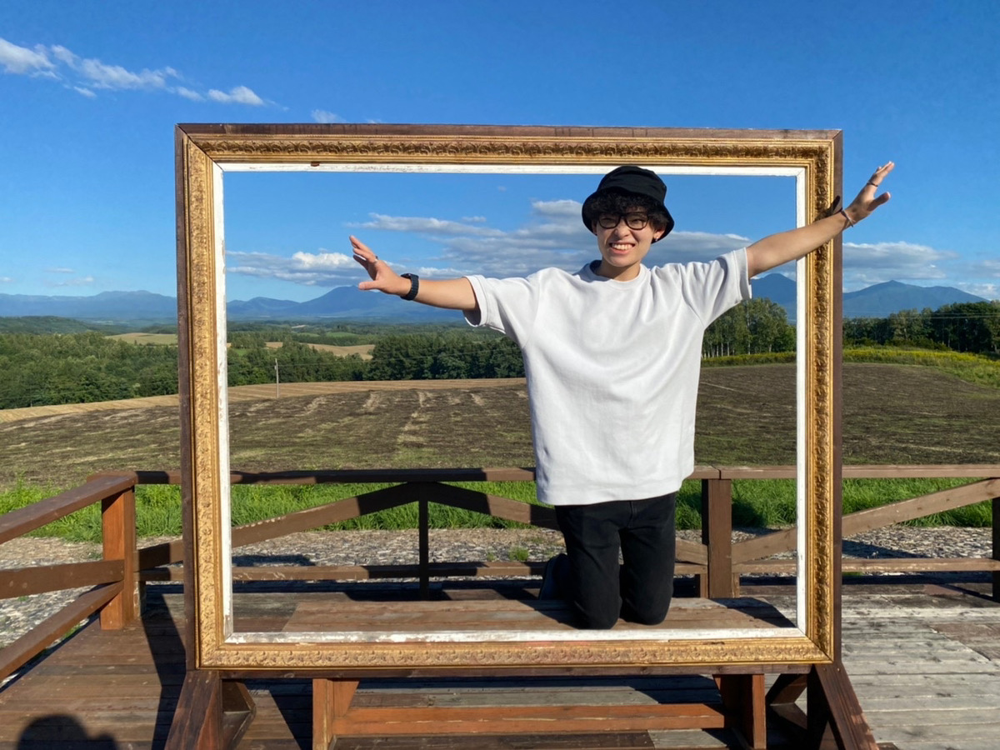

浜口 理久
プロフィール

北海道出身、
プログラマーとして
120本以上の
資格：実用英語技能検定準2級、
講座：Claude 101、
作品
-
企業CM サンプル建設
「夜と 朝」 冬の
夜に 道をあける 会社の 仕事を、 翌朝の 通学路とつないで 伝える CM。 -
商品PR サンプル牧場
「牛乳プリン」 牧場の
牛乳でつくる 瓶入りの プリンを、 夕飯のあとの 食卓で 見せる Web広告。
※架空の
経歴
プログラマー
本業、
大学を
工作機械の
現在は、
動画編集
個人事業、
プログラマーの
累計4社から
カット、
編集実績
-
※案件獲得のための
営業活動で 使用していた 動画です。